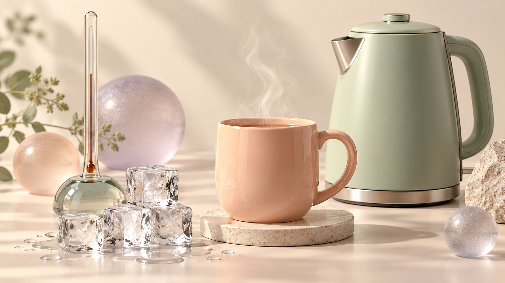

ВЕЛИКІ ВІДКРИТТЯ В ПОВСЯКДЕННИХ РЕЧАХ
Усе починається
з тепла.
Чому тане лід, зігріває чай і запотіває скло?
Зазирни у світ, де рухаються невидимі частинки.
Почати дослідження ↗Спостерігай. Змінюй. Пояснюй.

Звичні речі. Незвичайна фізика.01 / КАРТА ПОДОРОЖІ
Від відчуття — до розуміння
Обирай зупинку у власному темпі.
02 / МІНІЛАБОРАТОРІЯ
Що змінює температура?
Змінюй температуру в кожній посудині й одночасно порівнюй рух частинок того самого ідеального газу.
Умовна модель ідеального газу без фазових переходів. Однакова кількість частинок, об’єм і масштаб часу в обох посудинах. Розміри та швидкості не в масштабі. Відносна швидкість: 1,00× за 20 °C. Швидкість ∝ √T, де T = t + 273,15 К. Різні частинки мають різні швидкості.
Сформулюй висновок →
За підвищення температури середня кінетична енергія хаотичного руху частинок зростає, а характерна швидкість збільшується. Навіть за від’ємної температури за шкалою Цельсія тепловий рух триває.
03 / ТЕПЛО ПОРУЧ
Три способи передати енергію
01 ↔Теплопровідність
Металева ложка в гарячому чаї нагрівається. Енергія передається без перенесення речовини.
Поміркуй
Чому ручки посуду часто виготовляють із матеріалів, що погано проводять тепло?
Конвекція
Нагріті шари рідини або газу переміщуються. Так вода прогрівається в каструлі.
Поміркуй
Чому опалювальні прилади зазвичай розміщують ближче до підлоги?
Випромінювання
Сонце передає енергію Землі електромагнітними хвилями. Середовище для цього не потрібне.
Поміркуй
Чому темна поверхня на сонці за однакових інших умов нагрівається сильніше за світлу?
04 / МАЙСТЕРНЯ ДОСЛІДНИКА
Твоя чашка — твій розрахунок
Скільки теплоти потрібно для нагрівання води? Вважай, що втрат теплоти немає, а вода залишається рідиною.
Нотатки зберігаються лише в цьому браузері.
Показати відповідь для самоперевірки
НОВЕ / ІНТЕРАКТИВНИЙ ПРОСТІР
Фізика, яку можна змінювати
Передбач → запусти дослід → поясни результат. Обирай лабораторію.
Від льоду до пари
Що відбуватиметься з температурою під час плавлення та кипіння?
Ідеальна модель за нормального атмосферного тиску. Початково лід має 0 °C. Втрат теплоти немає. Час прискорено у 100 разів.
Під час плавлення температура стала, хоча енергія надходить.
? °C
Спочатку зроби прогноз, потім натисни «Змішати».
ПРАКТИКА / ФІЗИКА ТВОГО ДНЯ
Вирішуй як дослідник
КИШЕНЬКОВІ ЗНАННЯ
Картки, що допомагають згадати
Натисни картку, щоб побачити пояснення. Можна надрукувати весь комплект.
05 / ФАКТ ЧИ МІФ?
Довіряй дослідам, перевіряй інтуїцію
06 / ЗАБЕРИ ІЗ СОБОЮ
Одне відкриття на сьогодні
Заверши речення: «Тепер я можу пояснити, чому…»